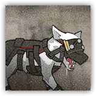
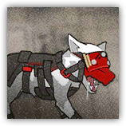

深池侦察犬 Dublinn Sniffer Hound
近战 物理；普通 野兽|
 |
深池部队操纵的生物。被深池部队驯化并改造的追踪犬。用于搜索并追踪目标。 最初是从某些雇佣兵队伍手中购买而来。佩戴着暗影术师制造的折射面罩，对一般的源石技艺有较强的抵抗能力。 |
使用数据：游击队猎犬（CR1，XP 100）
额外特性：折射抗性 Refraction Resistance。深池侦察犬为抵抗法术或魔法效应而作的豁免具有优势。陷入沉默状态时此特性失效。
深池侦察犬pro Dublinn Sniffer Hound Pro
近战 物理；普通 野兽|
 |
深池部队操纵的生物。被深池部队驯化并改造的追踪犬。用于搜索并追踪目标。 最初是从某些雇佣兵队伍手中购买而来。佩戴着暗影术师制造的折射面罩，对一般的源石技艺有较强的抵抗能力。 |
使用数据：游击队猎犬 Pro（CR2，XP 450）
额外特性：折射抗性 Refraction Resistance。深池侦察犬 Pro 为抵抗法术或魔法效应而作的豁免具有优势。陷入沉默状态时此特性失效。